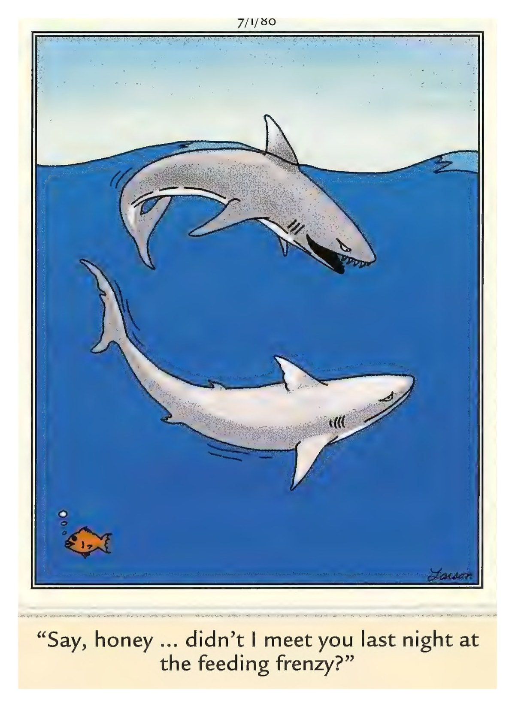

Your Daily Computer Brief
🔴 ALERT
Password manager mSecure just told all users to change every password stored in their vault — but won't say what actually happened. On November 3, mSeven Software emailed customers about "suspicious activity" and said to immediately change passwords, reset two-factor authentication, and remove passkeys. They didn't say when it happened, what was accessed, or if your data was stolen. Because the scope is unknown, assume the worst: change your most important passwords first (email, banking, work) through each service's official website. Use a different, strong password for each. Consider moving to a different password manager until mSecure explains what happened. Source: Malwarebytes — November 4–6, 2026
Today in Tech
- Chrome 157 released November 3 with 213 security fixes, including seven critical flaws that could let attackers run code on your computer just by visiting a malicious site. Update via the three-dot menu > Help > About Google Chrome. (Source: Malwarebytes — November 4, 2026)
- CISA added a WordPress core vulnerability (CVE-2026-119977) to its Known Exploited Vulnerabilities catalog on November 3. Sites running WordPress 4.7 through 7.1.3 are actively being attacked — update WordPress immediately. (Source: CISA — November 3, 2026)
- Microsoft's November security update arrives next week for all supported Windows versions. It includes fixes for actively exploited vulnerabilities. Let Windows Update run automatically, or check manually in Settings > Windows Update. (Source: Microsoft Security Blog — November 5, 2026)
Daily Tip
Press the Windows key and start typing the file name — Windows searches instantly. For deeper searches, click the search box in File Explorer (top-right) and type. Add "kind:document" or "kind:picture" to narrow results. No extra software needed.
😄 COMEDY BREAK
